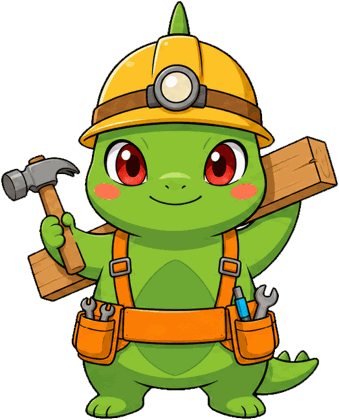

10問・約2分・登録なし
恋愛の
恋愛の
返信スタイル診断
既読がついて2時間。返信がない夜、あなたは何をしますか。
既読・返信・距離・不安。10の場面を選ぶだけで、あなたの「返信スタイル」を5タイプから診断します。

採点はこの端末の中(ブラウザ)だけで行います。回答の送信・保存はしません。結果はあなただけに表示されます。
読み物としての診断で、医学的な診断・検査ではありません。
Q1 / 10
あなたの返信スタイル

今日できること、3つ
共有する・保存する
共有ボタンは X の投稿画面を開くだけです。画像は端末内で作ります(送信しません)。
もっと深く知りたい人へ
この診断は、note「こいまいんど|恋愛心理学ラボ」の記事をもとに作っています。あなたのタイプに近い記事から読めます。
このタイプのもとになった記事(note・無料)
この診断について(出典と注意)
設問と結果文は、note「こいまいんど|恋愛心理学ラボ」の次の記事をもとに作りました。愛着スタイル(ジョン・ボウルビィの愛着理論)を土台にした読み物であり、医学的な診断ではありません。研究の数字は集団の平均で、個別の処方ではありません。
確認したい衝動が仕事中も止まらない、眠れない、食欲が落ちる、自分を傷つけたくなる。どれかが当てはまるときは、この診断は補助線にすぎません。臨床心理士やカップル療法、必要なら精神科を先に頼ってください(記事の案内と同じ考え方です)。